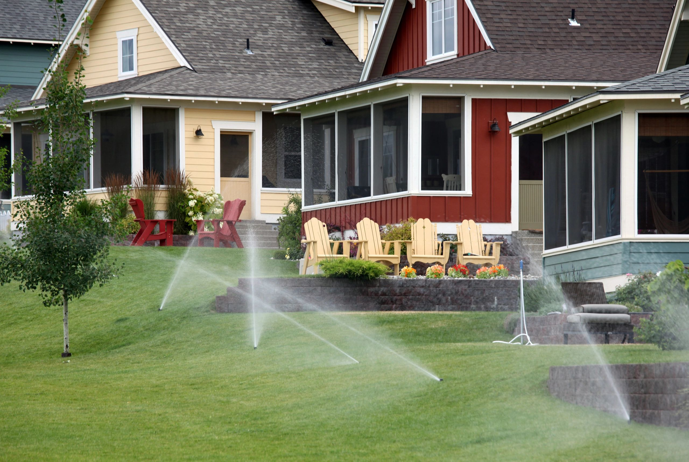
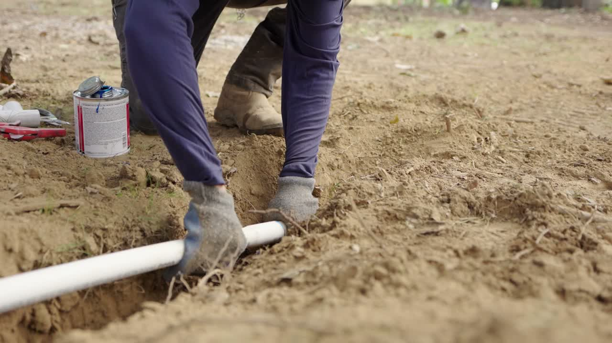
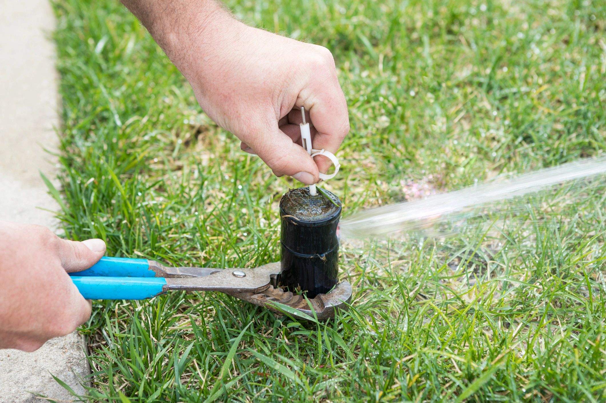
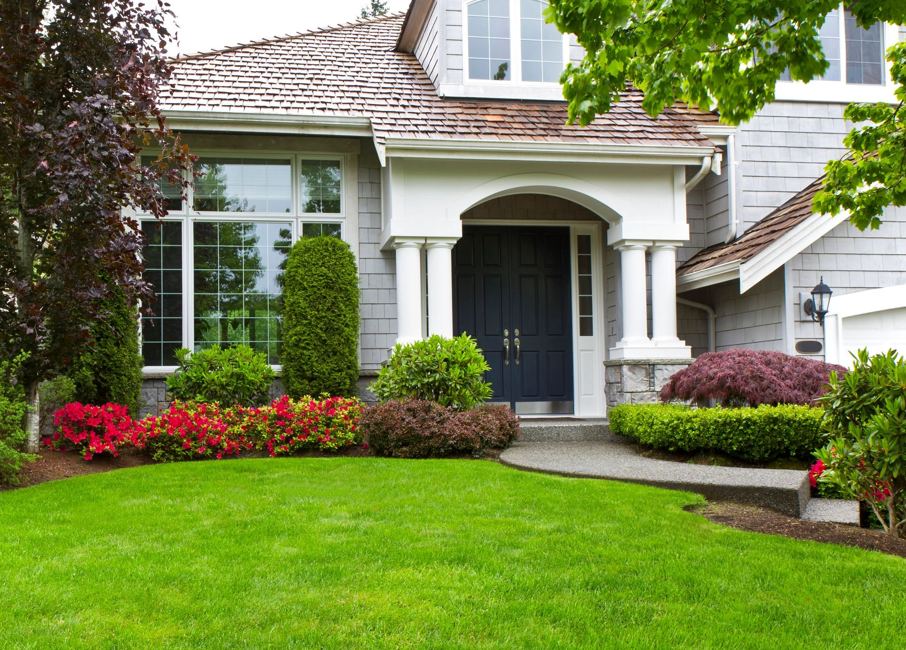

Проектирование полива
Эффективная система начинается с точного плана. Учитываем участок, тип почвы и давление в сети, чтобы каждая зона получала ровно столько воды, сколько нужно - без перерасхода.
Подробнее →Юг России
Надёжные решения по автополиву и озеленению для частных домов и коммерческих объектов - проектируем, монтируем и обслуживаем.
Бесплатная консультация →Наши услуги
От проекта системы полива до регулярного обслуживания - закрываем все задачи по орошению и ландшафту.

Эффективная система начинается с точного плана. Учитываем участок, тип почвы и давление в сети, чтобы каждая зона получала ровно столько воды, сколько нужно - без перерасхода.
Подробнее →
Устанавливаем капельные линии, роторы и умные контроллеры с минимальным вмешательством в газон. Оборудование рассчитано на жаркий климат и сложные грунты региона.
Подробнее →
Сломанные форсунки, течи клапанов, сбои контроллера - быстро находим причину и устраняем. Большинство заявок закрываем в день обращения или на следующий.
Подробнее →
От посадки засухоустойчивых растений до полного преобразования участка - создаём пространства, которые хорошо выглядят круглый год и подходят климату юга.
Подробнее →Почему мы
Работаем по договору, даём гарантию на монтаж и используем проверенные комплектующие. Ваш участок и спокойствие под защитой.
Учитываем жаркое лето, перепады осадков и особенности грунтов юга. Локальный опыт - меньше переделок и стабильный результат.
От небольшого двора до территории бизнес-центра - есть техника и бригада под проекты любого масштаба.
Начните с нами
Бесплатный выезд и предварительная смета. Без давления и догадок - понятные ответы от людей, которые знают эту землю.
Запросить смету →